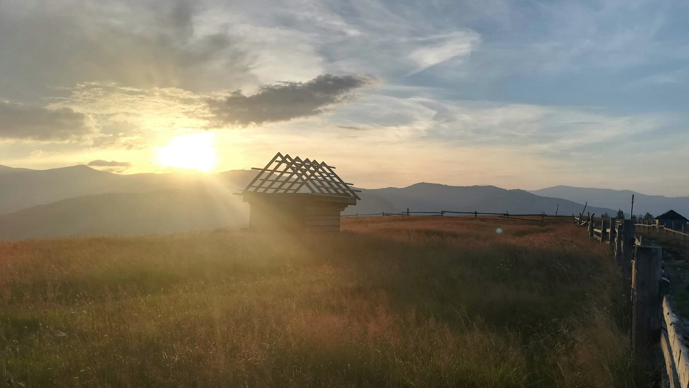
FERO.bau, s. r. o. · Trstín
Od výkopu po kľúč.
Stavby a ich zmeny, rekonštrukcie, búracie a výkopové práce aj dokončovacie práce vnútri a vonku. Jedna firma na celú stavbu, pod Malými Karpatmi.
O firme
Jedna firma na celú stavbu.
Od búrania starého a prvých výkopov cez základy a murivo až po omietky, podlahy a fasádu. Stavbu nemusíte skladať z piatich rôznych firiem a strážiť, kto na koho čaká.
Postavíme nový dom, pristavíme alebo nadstavíme ten, ktorý už máte, a zrekonštruujeme byt, dom aj nebytové priestory. Pôsobíme v Trstíne a okolí.
- Sídlo
- Trstín 185, 919 05 Trstín
- Konateľ
- František Humlíček
- Pôsobíme
- Trstín a okolie
- Zápis
- OR Okresného súdu Trnava, oddiel Sro, vložka 57921/T
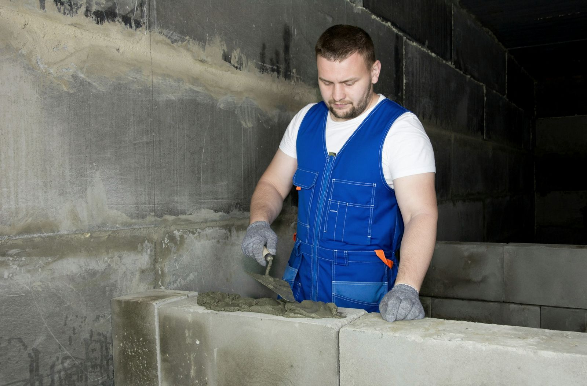
Ako rastie stavba
Od výkopu po kľúč v šiestich etapách.
- Etapa 1 / 6
Príprava a výkop
Stavenisko sa najprv pripraví. Čo má ísť preč, zbúrame, terén upravíme a vykopeme jamu aj ryhy pre základy.
Prípravné práce
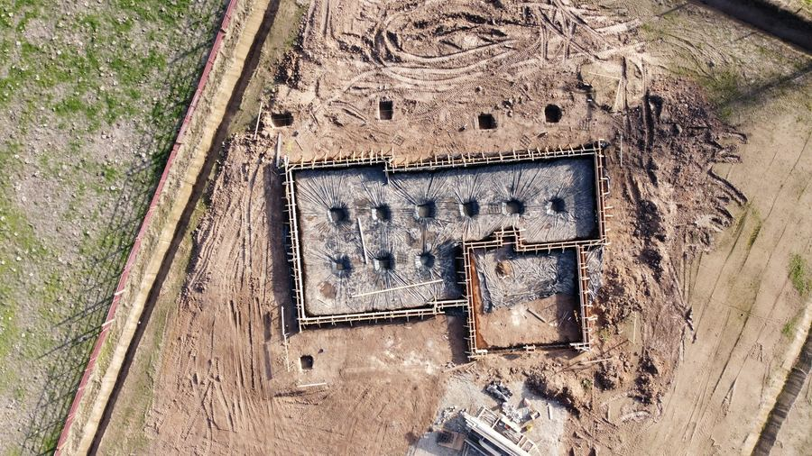
- Etapa 2 / 6
Základy
Základové pásy a doska sú to, na čom stojí všetko ostatné. Preto ich nerobíme narýchlo.
Novostavby
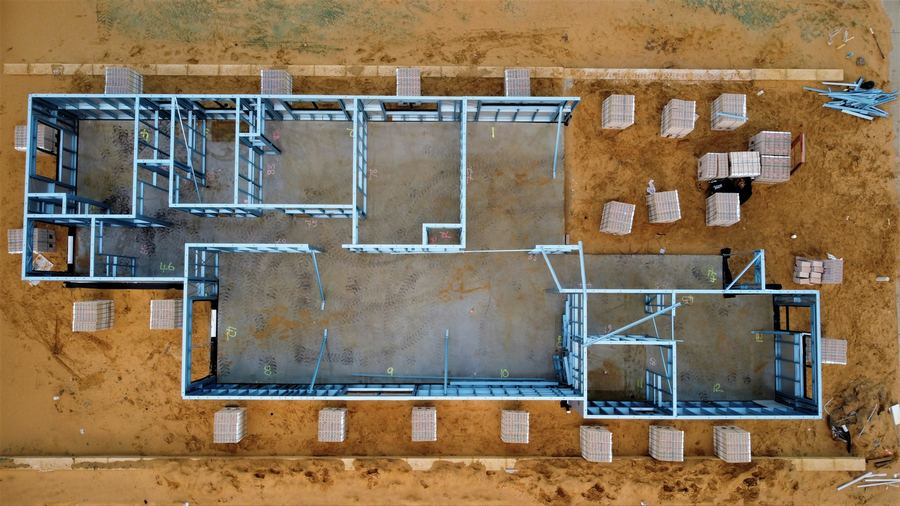
- Etapa 3 / 6
Murivo
Obvodové a vnútorné steny rastú rad po rade. Tu sa ukáže, či bol základ urobený rovno.
Hrubá stavba
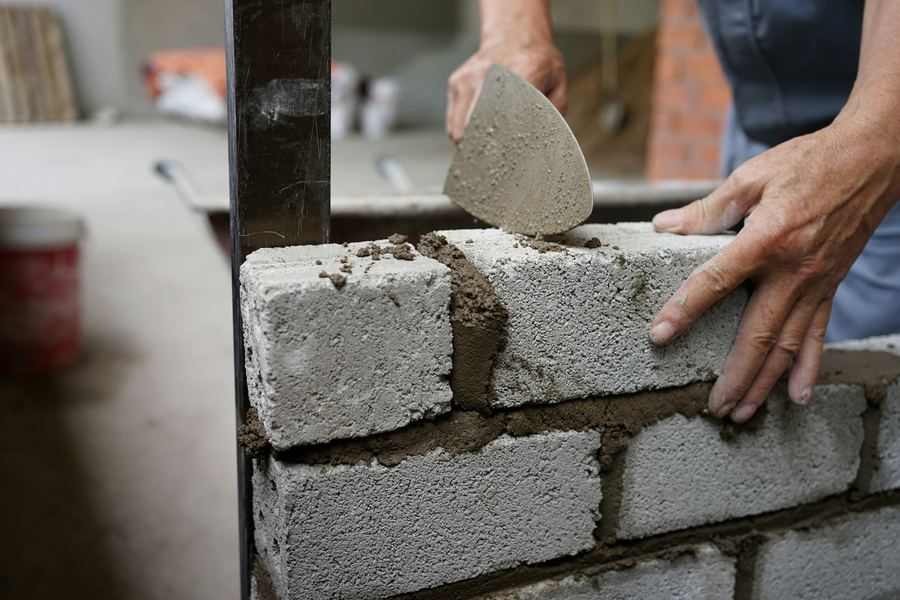
- Etapa 4 / 6
Strop a strecha
Strop uzavrie podlažie a nad ním príde krov so strešnou krytinou. Dom je pod strechou.
Hrubá stavba
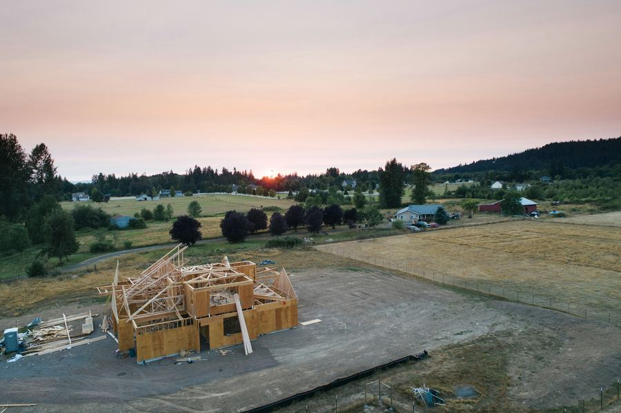
- Etapa 5 / 6
Okná a fasáda
Osadené okná a dvere, omietky a fasáda. Zvonku dom vyzerá hotový.
Dokončovacie práce · exteriér
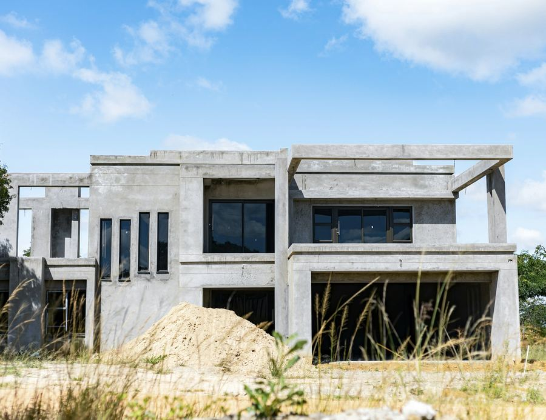
- Etapa 6 / 6
Interiér a kľúč
Vnútri sadrokartón, omietky, podlahy a obklady. Na konci si stavbu spolu prejdeme a odovzdáme Vám kľúč.
Dokončovacie práce · interiér
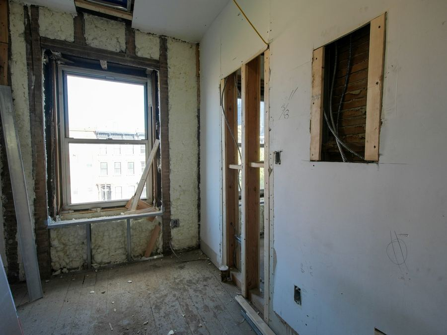
Čo robíme
Práce, ktoré u nás objednáte.
Vyberte, čo Vás čaká. Pri dopyte stačí napísať pár viet, zvyšok si prejdeme na mieste.
- 01
Novostavby
Rodinné domy a ďalšie stavby od základov. Hrubú stavbu aj práce, ktoré prichádzajú po nej.
- rodinné domy
- hrubá stavba
- 02
Prístavby, nadstavby a stavebné úpravy
Keď dom potrebuje viac miesta alebo inú dispozíciu. Pristavíme, nadstavíme alebo upravíme stavbu, ktorú už máte.
- prístavba
- nadstavba
- dispozícia
- 03
Rekonštrukcie
Byty, domy aj nebytové priestory. Od búrania starých konštrukcií po nové povrchy.
- byty
- domy
- nebytové priestory
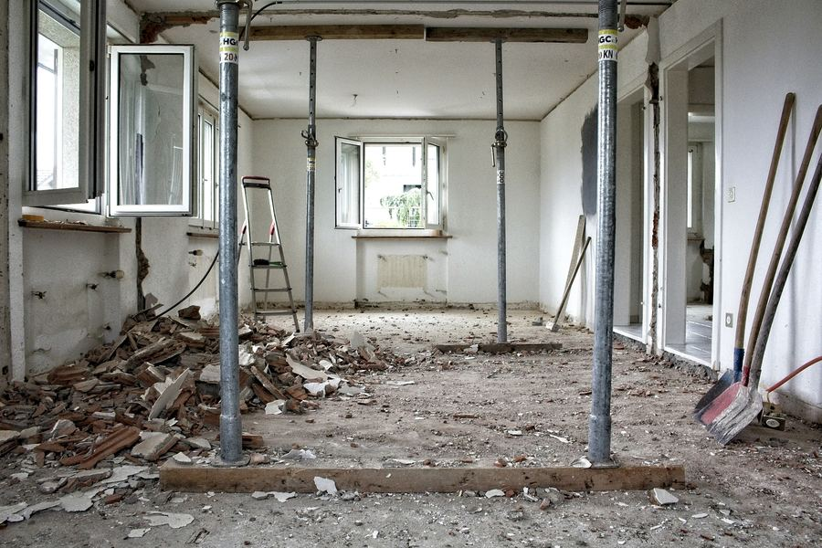
- 04
Prípravné práce
Búracie a výkopové práce a príprava staveniska a terénu, aby sa dalo začať stavať.
- búranie
- výkopy
- stavenisko
- 05
Dokončovacie práce
Dokončovacie stavebné práce v interiéri aj exteriéri. Omietky, sadrokartón, podlahy, obklady a fasády.
- interiér
- exteriér
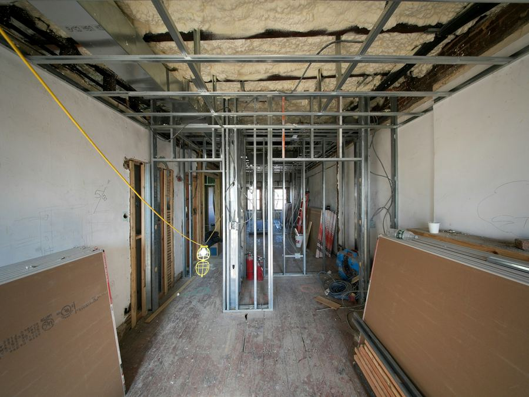
- 06
Doprava materiálu
Nákladná doprava vozidlom do 3,5 t. Napríklad keď treba priviezť materiál na stavbu.
- do 3,5 t

Na stavbe
Ilustračné fotky. Na hotovom webe tu budú Vaše realizácie.
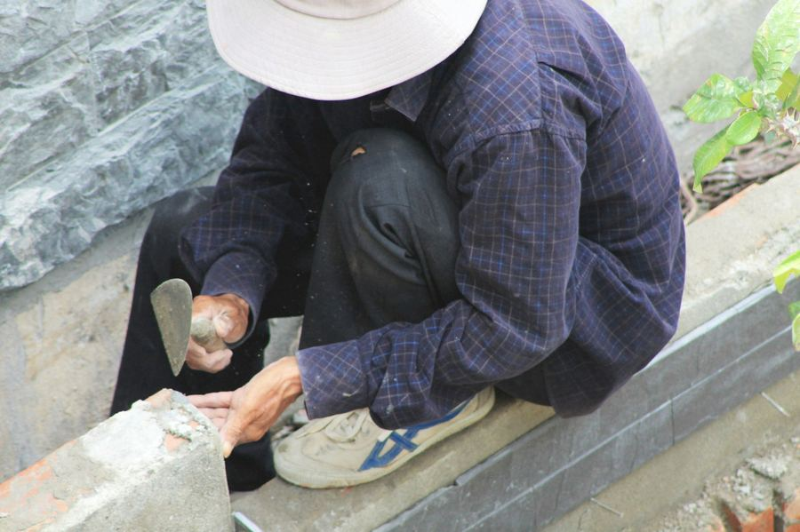
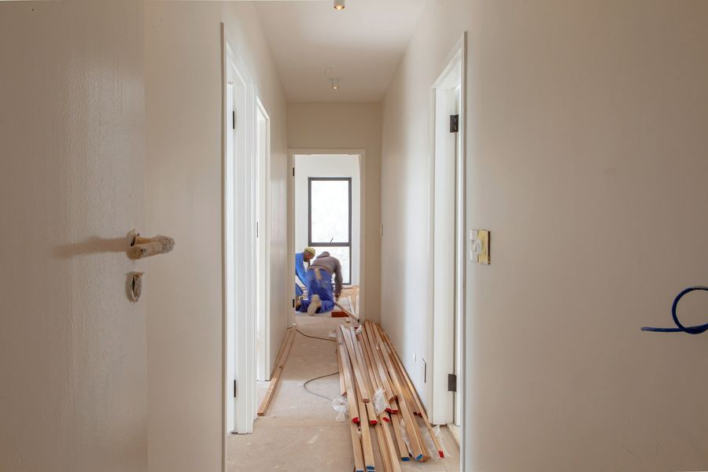
Spolupráca
Bez chaosu a bez prekvapení.
- 01
Dopyt
Napíšete, čo plánujete. Stačí pár viet, fotka alebo náčrt. Projekt, ak ho máte, pokojne priložte.
- 02
Obhliadka
Dohodneme termín a pozrieme sa na to priamo na mieste. Až potom sa dá poctivo povedať, čo všetko bude treba.
- 03
Cenová ponuka
Dostanete ponuku s rozpisom prác a termínom. Viete, za čo platíte a kedy sa začne.
- 04
Realizácia
Stavbu urobíme v dohodnutom rozsahu a po sebe upraceme. Na konci si ju spolu prejdeme.
Dopyt
Povedzte nám, čo plánujete.
Kliknite, o čo ide, a doplňte pár údajov. Ozveme sa Vám späť a dohodneme obhliadku.
Stavebný denník
- Práce
- zatiaľ nevybrané
- Miesto
- —
- Kedy
- —